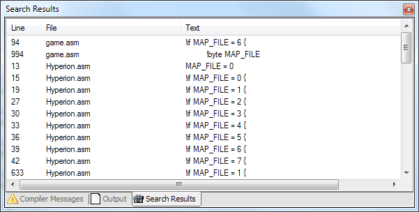

Search Results
If in the Find dialog "Find All" is chosen the search results window will be shown. All found results are listed there.

A double click on a line opens the document and jumps to the found location.